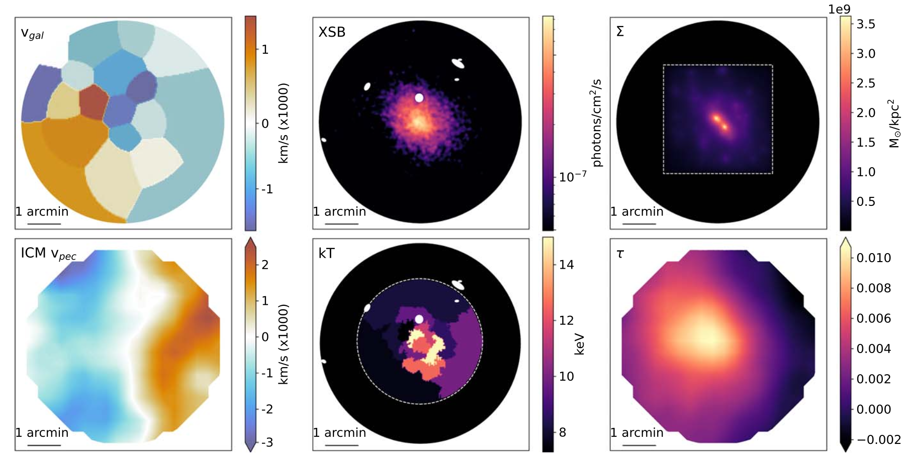
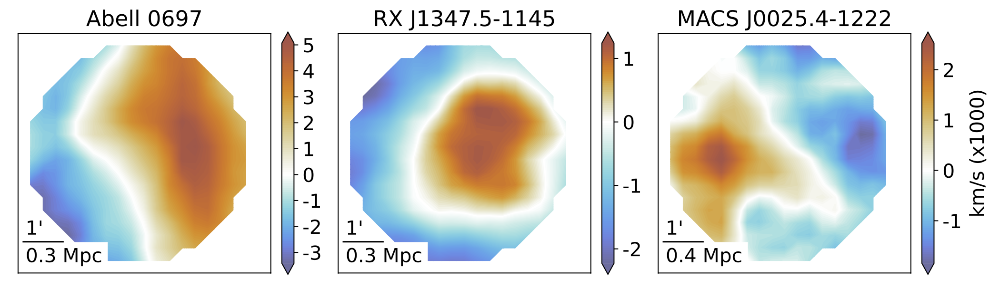
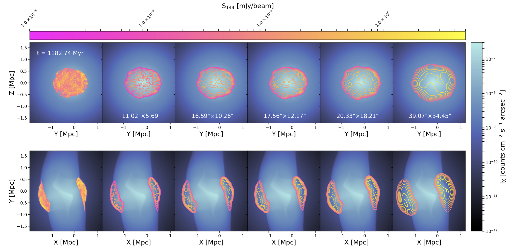
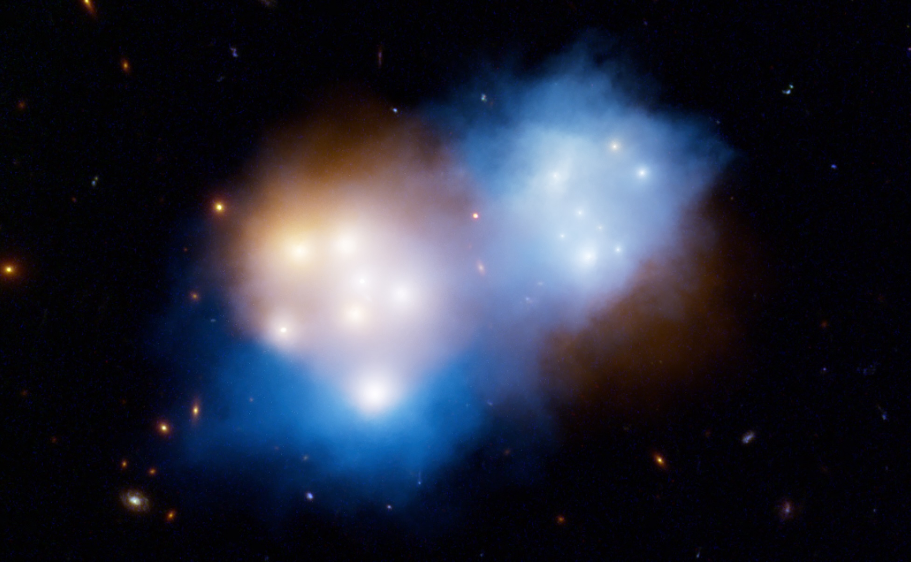

Paper I
Methodology Overview and Discovery of a Gas–Dark Matter Velocity Decoupling in the MACS J0018.5+1626 Merger
E.M. Silich et al. 2024, ApJ · arXiv:2309.12533
Improved Constraints on Mergers with
SZ, Hydrodynamical simulations,
Optical, and X-ray
ICM-SHOX — Improved Constraints on Mergers with SZ, Hydrodynamical simulations, Optical, and X-ray — is a systematic framework for reconstructing the 3D geometry, epoch, and orientation of merging galaxy clusters. Cluster mergers are the most energetic events since the Big Bang and are natural laboratories for studying dark matter, plasma physics, and cosmology — but any single observation only tells part of the story. By jointly comparing X-ray, thermal and kinetic Sunyaev–Zel'dovich (SZ) effect, optical spectroscopy, gravitational lensing, and radio observations to tailored hydrodynamical simulations, ICM-SHOX can constrain merger scenarios that no single probe can attain individually.
Check out our papers and some movies below!

Methodology Overview and Discovery of a Gas–Dark Matter Velocity Decoupling in the MACS J0018.5+1626 Merger
E.M. Silich et al. 2024, ApJ · arXiv:2309.12533


The Case of MACS J0018.5+1626, a Radio Relic that Looks Like a Radio Halo?
P. Domínguez-Fernández et al. 2026 · arXiv:2602.05050
Simulated evolution of mock observables as a function of epoch from hydrodynamical simulations tailored for the MACS J0018.5+1626 cluster merger.
Simulated evolution of a gas—dark matter velocity dipole decoupling in a cluster merger, as well as the total/gas densities and gas temperature, as a function of epoch. From E.M. Silich et al. 2024, ApJ.
Paola adds a radio movie here?
Under construction!
